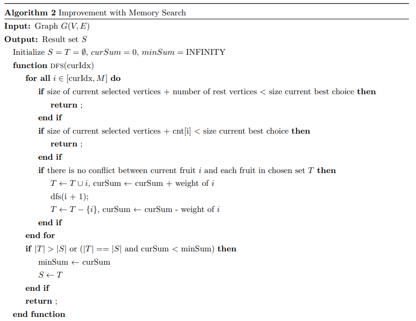
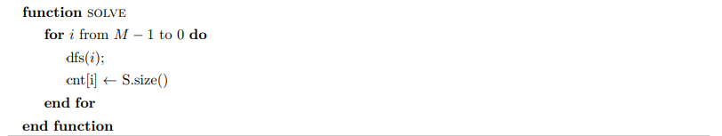
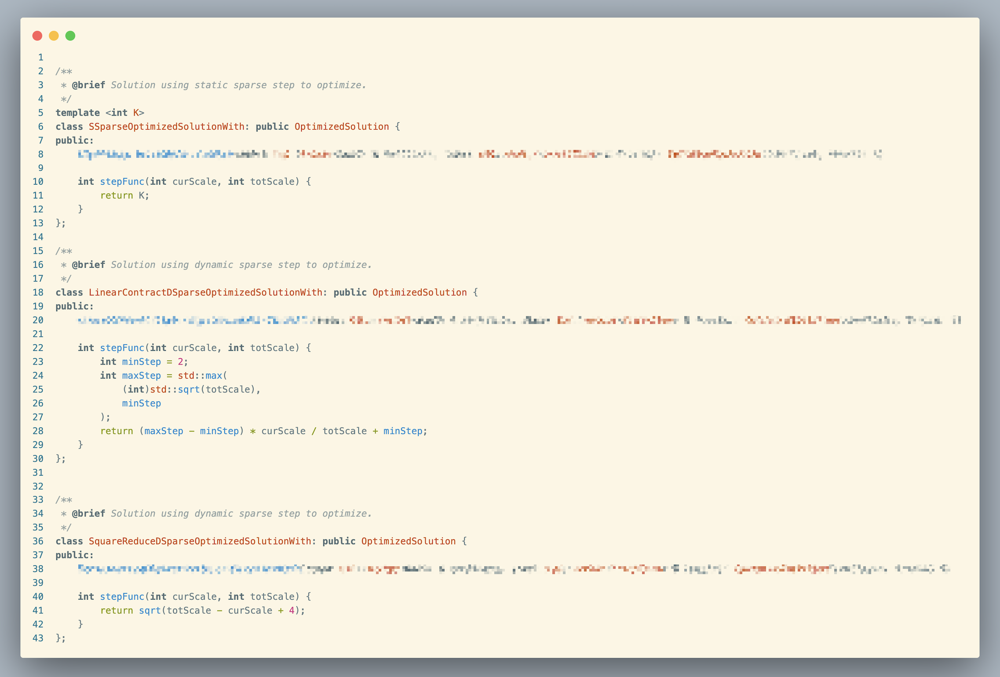

Lab3: Safe Fruit
Group 8
Problem
Some fruits must not be eaten with some other fruits.
Pick up maximum number of fruits that can be eat safely.
Abstraction
Insert as many $x$ as possible into a set $U$.
For each $x$, no $y \in U$ has conflicts with $x$.
Baseline
Naive Backtracking
Content
Use dfs to search all possible solutions.
Check if current $x$ is ok to insert, rather than check in the end.
To reduce the number of recursive layers, we use loop to find next possible $x$.
And a basic pruning method is used. If the rest of the fruits can not fill the gap, we can stop searching.
Pesudo Code

Improvement
Mnemonization Optimized
Content
Still use dfs to search all possible solutions.
What's different is that we use a memory search to reduce the number of recursive layers.
We can imagine the repetitive work delaying efficiency.
So use something to memorize it!
Rather then dfs only the max situation, we dfs from the min situation and memorize the result.
It's a bit like dp: \[ dp_i = \left\{ \begin{aligned} & dp_{i+1} + 1 \\ & dfs(i, dp_i) \end{aligned} \right. \text{ where } i \text{ from n to 1 } \]
Pesudo Code (P1)
Pesudo Code (P2)
Fail Try
Spare Step
Content
Although memorization boost the efficiency, but I notice more basic dp caused by the pretreatment.
But the limits from the previous situation's result shouldn't be an exact number.
So why not update it in a more spare way?
That means, the limits become a upper bound, rather then an exact number.
Override 
Performance
| Scale | Naive | Memorize | Sparse 2 | Sparse 3 | Sparse 5 | Linear | Square |
| N=16, M=32 | 4.663s | 4.156s | 4.140s | 4.124s | 4.124s | 4.118s | 4.121s |
| N=32, M=32 | 4.432s | 3.870s | 3.849s | 3.843s | 3.842s | 3.832s | 3.823s |
| N=48, M=32 | 4.664s | 4.187s | 4.168s | 4.166s | 4.163s | 4.161s | 4.161s |
On maxOS 12.6 Apple M1, each for 1000 cases
Time Complexity
According to Power Set Theorem, Backtracking without pruning: \[O(N^2\cdot 2^{M})\]Space Complexity
If we adopt a mapping like map, implemented by a red-black tree, the space complexity is \[O(M \log M)\]
If we adopt a mapping like unordered_map, implemented by a hash table, the space complexity is \[O(H)\] where H is the size of the hash table. And we use a simple hash function \[f(u, v) = u \times {\tt LIM} + v\] \[H = {\tt LIM} = 2048\]